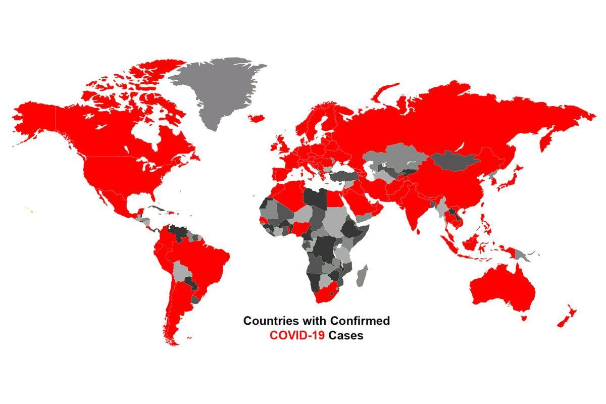

COVID-19 affects different people in different ways. Most infected people will develop mild to moderate illness and recover without hospitalization. Most common symptoms: fever dry cough tiredness Less common symptoms: aches and pains sore throat diarrhoea conjunctivitis headache loss of taste or smell a rash on skin, or discolouration of fingers or toes
What is the origin of COVID-19? It is believed to have zoonotic origins and has close genetic similarity to bat coronaviruses, suggesting it emerged from a bat-borne virus. There is no evidence yet to link an intermediate animal reservoir, such as a pangolin, to its introduction to humans. The virus shows little genetic diversity, indicating that the spillover event introducing SARS-CoV-2 to humans is likely to have occurred in late 2019. Epidemiological studies estimate each infection results in 1.4 to 3.9 new ones when no members of the community are immune and no preventive measures taken.
Hopes are rising that a coronavirus vaccine will be approvedby the end of the year, with healthcare workers receiving their first dose in early 2021. Dr Anthony Fauci, the US’s leading expert in infectious diseases, said on Sunday it should be known by the end of November or early December if a vaccine was safe and effective.